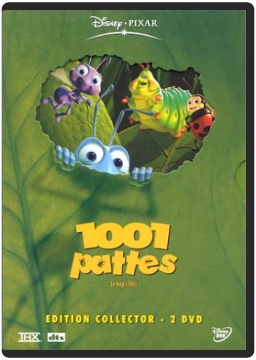

A l'occasion de 25ème anniversaire du film, redécouvres le monde magique de prydain dans une version restaurée et remasterisée ! avec en prime de nombreux bonus pour cette édition exclusives ! - De Richard Rich, Ted Berman - DVD Zone 2. Pal . Paru le 6 octobre 2010 - Format image: 16/9 compatible 4/3 format respecté 1.66 - Durée (mn): 80 Minutes - Collection: Grands Classiques.  Oubliez le chef-d'œuvre de Jean Cocteau pour découvrir l'un des plus beaux dessins animés que le studio Walt Disney ait produits ces dernières années. La Belle et la Bête reprend cette magnifique histoire d'une jeune fille prisonnière dans la demeure d'une bête cachant un terrible secret. Tous les éléments sont présents pour faire de ce dessin animé une réussite. Les scènes de comédie musicale (les chansons sont parfaites) alternent avec les moments d'humour, d'effroi et d'émotion. Car La Belle et la Bête est avant tout une histoire d'amour très romantique incarnée par deux personnages au graphisme particulièrement travaillé. Et comme dans tout bon Walt Disney, de nombreux personnages attachants accompagnent les deux héros. Citons ici Mme Samovar, une théière bienveillante accompagnée de son fils, une mignonne petite tasse. De plus, on notera la participation finale de Charles Aznavour et de Liane Foly, interprètes d'une très belle ballade. Autant d'éléments qui font de ce long métrage l'une des très grandes réussites des studios Disney, toutes périodes confondues, présentée ici enfin dans sa version intégrale ! —Marc Maesen |  Dans la savane africaine, le lion Mafusa, roi des animaux, et Sarabi donnent naissance à Simba. L’héritier pourrait grandir en paix s’il n’y avait Scar, le frère de Mafusa, dont la soif de pouvoir va le pousser à commettre l’irréparable… Pour le grand plaisir des fans de dessins animés, Le Roi Lion, le plus grand succès des studios Disney (sur le fil, semble-t-il, avec l’aquatique Nemo) sort enfin dans une édition exclusive double DVD. Pour l’occasion, Disney a fait les choses en grand et il y a largement de quoi contenter le chaland : pas moins de deux versions du film, un karaoké, des jeux, des scènes coupées et une suite de documentaires savoureux, appelés "safaris", sur les différents stades de fabrication du film. Un DVD plein de surprises et de magie. Un vrai bonheur au niveau de l’animation. Un cadeau idéal ! —George Maubeuge  A chaque anniversaire d'Andy, c'est la même chose ses jouets redoutent l'arrivée d'un nouveau venu qui pourrait les supplanter dans le coeur du petit garçon. Cette année là, la pire des prévisions va se réaliser : Buzz l'éclair, un cosmonaute électronique, fait une entrée triomphale. Bouleversant l'ordre des choses, il devient vite le héros d'Andy et des autres jouets. Détrôné et déshonoré, Woody le cow-boy est dès lors prêt à tout pour retrouver sa place de premier dans le coeur d'Andy et son statut de chef des jouets.  walt disney, 51 : 1001 pattes - édition collectorwalt disney La magie était telle lors de la sortie en 1995 de Toy Story – premier film entièrement conçu par ordinateur – que, lorsque la société Pixar sortit son deuxième long métrage, 1001 pattes, on pouvait craindre d'être moins emballé. Le film est pourtant irrésistible. Plus vivant et plus coloré que l'autre film d'animation avec des insectes, sorti en 1998 (Fourmiz), 1001 pattes conte la belle histoire de Flik. Cette fourmi et sa communauté vivent dans la crainte des sauterelles et de leur terrible chef, Hopper, qu'ils doivent nourrir. Lorsque Flik détruit accidentellement la récolte destinée aux sauterelles, il décide d'aller chercher de l'aide, guidé par une idée simple : "Il nous faut des insectes plus gros !" Les fourmis, dirigées par la princesse Atta, sont assez heureuses de se débarrasser ainsi de cette source d'ennuis. Seulement Flik revient, après avoir trouvé du secours auprès d'une troupe d'insectes de cirque – qui craignent malheureusement la bagarre. Tout comme dans Toy Story, les personnages sont dans leur ensemble remarquables et souvent pittoresques. Parmi les plus sympathiques, une coccinelle aux mauvaises manières, un phasme et une paire de puces incompréhensibles. Toutefois, c'est la petite sœur de la princesse Atta, bébé Dot – qui en pince pour Flik –, qui fera fondre le cœur des spectateurs. Destiné à un public plus jeune que Fourmiz, 1001 pattes offre une bonne dose de suspense préparant un happy end et l'élimination du méchant. Cette édition collector double DVD comblera les fans de toutes ces petites bêtes à travers de nombreux bonus retraçant toutes les étapes de la réalisation du film (de sa préparation à sa sortie en DVD) ou encore un nouveau bêtisier, toujours aussi hilarant. —Doug Thomas  Le 38ème long-métrage des studios Disney est consacré à un mythe déjà adapté pas moins de 47 fois au cinéma ! Pari difficile (mais tenu) que cette appropriation des aventures du héros mi-homme mi-animal dont les déplacements donnent matière à une créativité visuelle débordante et communiquent aux spectateurs de véritables sensations. Loin d’être une pâle copie du Livre de la jungle, le film possède son univers propre, notamment par son exploration plus profonde des rapports filiaux et de la quête identitaire menée par son héros. Un Tarzan pour tous publics qui a de plus le mérite de proposer avec Jane un personnage féminin qui, pour une fois, n'est pas une bécasse en attente du prince charmant. |

Julien
Collection Total:
1 866 Items
1 866 Items
Last Updated:
Feb 24, 2021
Feb 24, 2021


 Made with Delicious Library
Made with Delicious Library